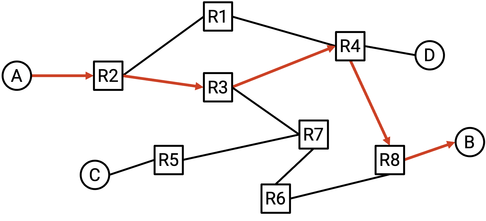
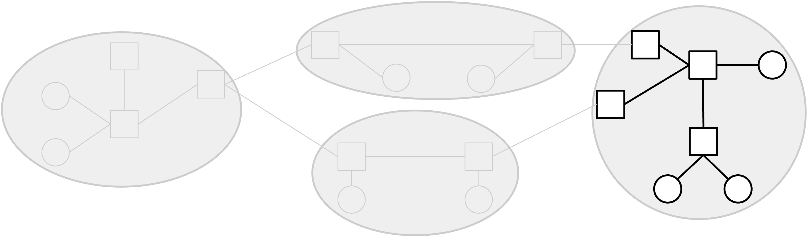
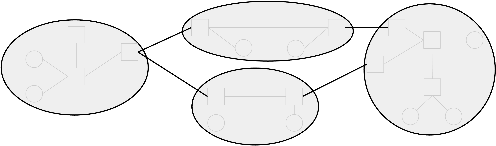

Introduction to Routing
What is Routing?
Suppose that machine A and machine B are both connected to the Internet. Machine A wants to send a message to machine B, but the two machines are not directly connected to each other. How does machine A know where to send the message, so that the message will eventually reach machine B? What path will the message take through the network to reach its destination of machine B? In this unit, we’ll be studying routing to answer these questions.

First, we’ll devise a model of the Internet so that we can pose routing as a well-defined problem. We’ll also see what answers to the routing problem look like, and what makes an answer valid and good.
Next, we’ll look at several different types of routing protocols that can be implemented to help generate answers to the routing problem. We’ll also see how addressing protocols can be used to make our routing protocols scalable to the entire Internet.
Finally, we’ll take a brief look at the real-life hardware we use to implement these routing protocols.
Inter-Domain and Intra-Domain Routing
One possible strategy for routing is to build a model of the Internet that includes every single machine in the world, and design a single giant routing protocol that will allow us to send packets anywhere in the world. However, this is infeasible in practice because of the scale of the Internet.
Instead, we’ll take advantage of the fact that the Internet is a network of networks. In other words, the Internet consists of many local networks. Each local network implements its own routing protocol that specifies how to send packets within just that local network. Then, we can connect up all those local networks and implement a routing protocol across all the local networks, specifying how to send packets between different local networks.

Local networks are not identical. For example, they might differ in size: Some networks might have more machines than others. Or, the machines might be spread out over a wider physical area (e.g. the entire UC Berkeley campus), or a smaller area (e.g. your home). Networks can also differ in the bandwidth they need to support, the allowable failure rate, the number of support staff available, the age of the infrastructure, the amount of money available to build and support it, and so on.
Because each network has its own structure and requirements, different local networks might choose to use different routing protocols. A strategy for routing packets might be effective on one network, but not another one.
With the network of networks model, we can let individual local networks choose a routing strategy for packets within their network. Each operator can choose the protocol that works best for them. The protocols for routing packets within a local network are called intra-domain routing protocols, or interior gateway protocols (IGPs). Real-world examples include OSPF (Open Shortest Path First) and IS-IS (Intermediate System to Intermediate System).

By contrast, protocols for routing packets across different networks are called inter-domain routing protocols, or exterior gateway protocols (EGPs). In order to support sending packets across different local networks, every network needs to agree to use the same protocol for routing packets between each other. If different networks used different inter-domain protocols, there’s no guarantee that that the entire Internet could be connected in a consistent way. What if one operator only implemented Protocol X, and another operator only implemented Protocol Y? It’s not clear how these two local networks would be able to exchange messages.
Because every network must agree to use the same inter-domain protocol, there is only one protocol implemented at scale on the Internet, namely BGP (Border Gateway Protocol).

This model of interior and exterior gateway protocols is convenient for intuition, but in practice, there is not always a clear distinction between them. For example, BGP is sometimes also used inside a local network, in addition to between different networks.
Regardless of whether a protocol is deployed internally within a network, or externally between all networks, we can additionally classify the routing protocol by looking at what the underlying algorithm is doing. In particular, we’ll study distance-vector protocols, link-state protocols, and path-vector protocols (more about each type later).